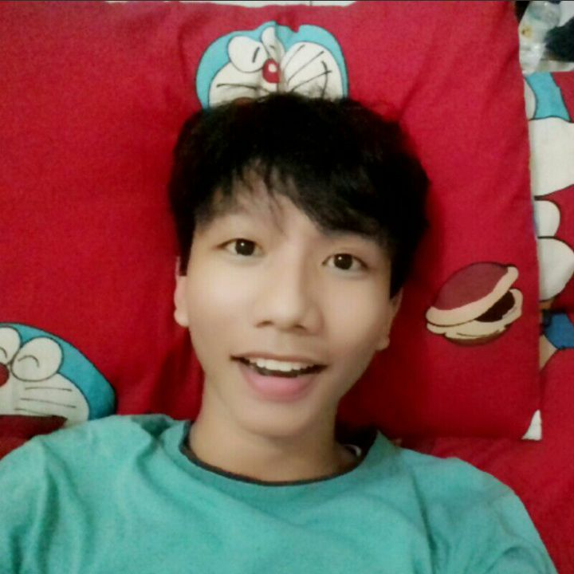

| DATA DIRI | KETERANGAN | FOTO |
| Nama | Diggy Bani Nusantara |  |
| Tempat/Tanggal Lahir | Tegal, 9 Juni 2000 | |
| Perguruan Tinggi | Universitas Dian Nuswantoro | |
| Jurusan | Teknik Informatika - S1 | |
| Jenis Kelamin | Laki-laki | |
| Alamat | Jl.Gergaji Pelem V No. 25 RT 01/05 Mugassari | |
| Pekerjaan | Mahasiswa | |
| Hobi | Main Game dan Nonton Film |
Nama saya Diggy Bani Nusantara. Sebuah nama yang memiliki arti "Pemuda Keturunan Nusantara". Teman-teman biasa memanggil saya Diggy, sedangkan orangtua saya memanggil saya dengan sebutan "ii". Saya lahir di Tegal, pada tanggal 9 Juni 2000. Saya anak kedua dari dua bersaudara dan sekarang saya tinggal di Semarang.
Ayah saya bernama Pujo Budiono, Beliau adalah seorang Pegawai Negeri Sipil dan ibu saya yang bernama Suwirah, Beliau seorang ibu rumah tangga sekaligus pedagang. Saya mempunyai seorang kakak perempuan bernama Luthfia Diba Kusumawardhani, kakak saya bekerja di PT. Telekomunikasi Indonesia
Saya sekolah di SD Negeri Pagerbarang 03 yg berada di Tegal, kemudian melanjutkan pendidikan di SMP Negeri 01 Jatibarang. Saya lulus dibangku Sekolah Menengah Pertama pada tahun 2014 dengan nilai yang cukup memuaskan. Setelah lulus SMP saya melanjutkan pendidikan di SMA Negeri 01 Slawi. Saya mulai ikut beberapa organisasi di SMA. Seperti Pramuka Inti dan Seni Rupa dan Musik. Setelah lulus di SMA, saya mendaftar di Universitas Dian Nuswantoro karena disini jurusan Teknik Informatika terbaik di Jawa Tengah. Saya bercita-cita menjadi programmer handal yang bisa membuat software seperti idola saya yaitu Bill Gates.